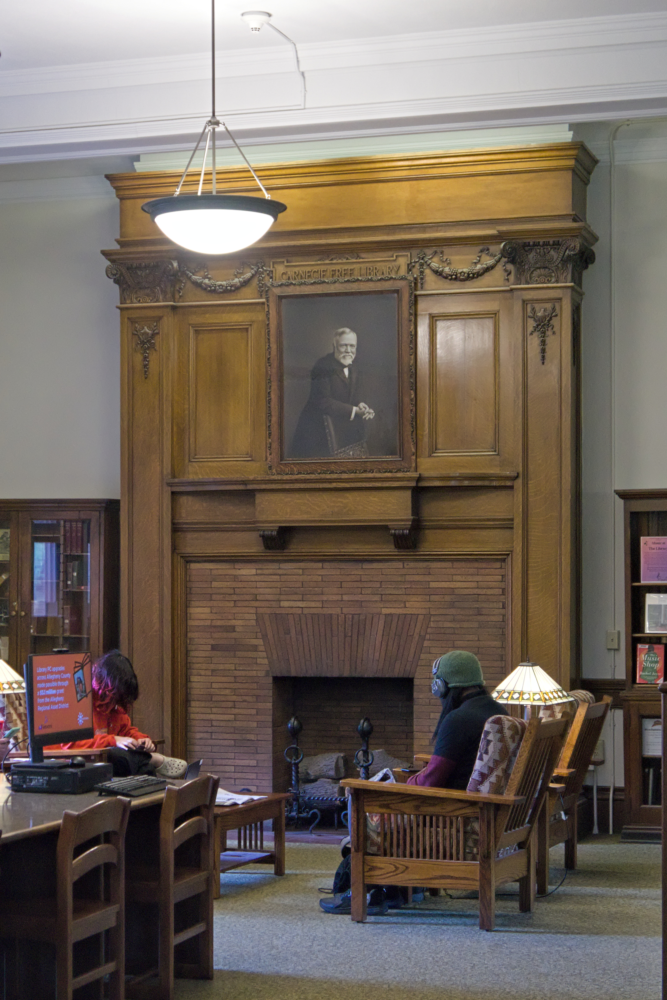

A READING-SPACE CONCEPT
A little room for big ideas.
Bring a book. Find a comfortable corner. Make a little space for reading, together.
Illustrative photograph unavailable.
THE IDEA
A pause, shared.
Small Hours imagines a place where reading is enough. No assigned chapters, no required introductions — just a book you want to spend time with.
Come for a few quiet pages. Stay curious about what everyone else is reading. Conversation is welcome; silence is welcome too.
KEEP IT SIMPLE
Three things to bring.
A book of your choice
Something new, a familiar favorite, or the one you keep meaning to finish.
A little time
Leave a small opening in your day for a chapter, a page, or a sentence.
Your own pace
Read slowly, take a note, or simply sit with an idea. There is no reading target.
A FEW DETAILS
Before you turn the page.
Is this a real venue I can book?
Not yet. Small Hours is a fictional website example. It does not offer bookings, memberships, or a physical address.
Do I need to read the same book as everyone else?
In this concept, everyone brings their own book. There is no shared reading list or preparation.